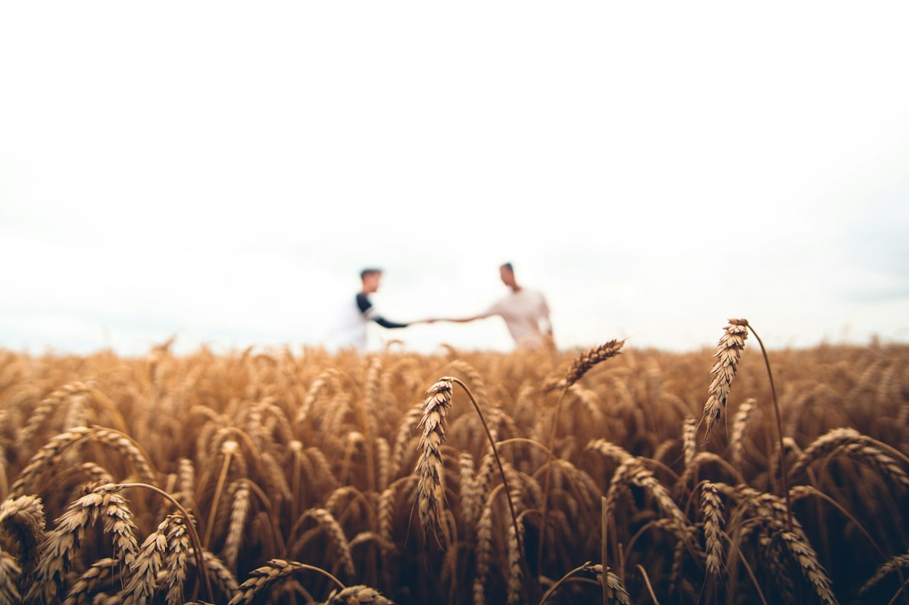
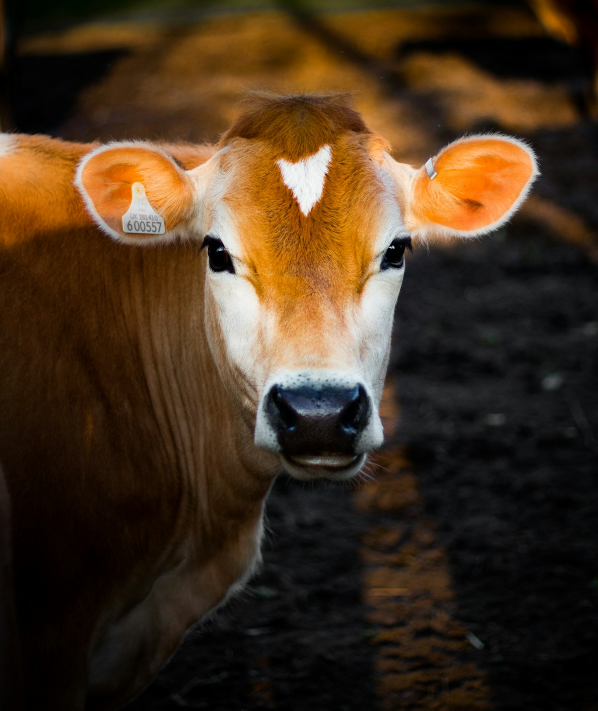

ADIRUL
PERTANIAN & PENTERNAKAN
Menawarkan pilihan hasil pertanian dan penternakan dengan maklumat yang mudah diakses.


PERTANIAN & PENTERNAKAN
Menawarkan pilihan hasil pertanian dan penternakan dengan maklumat yang mudah diakses.

